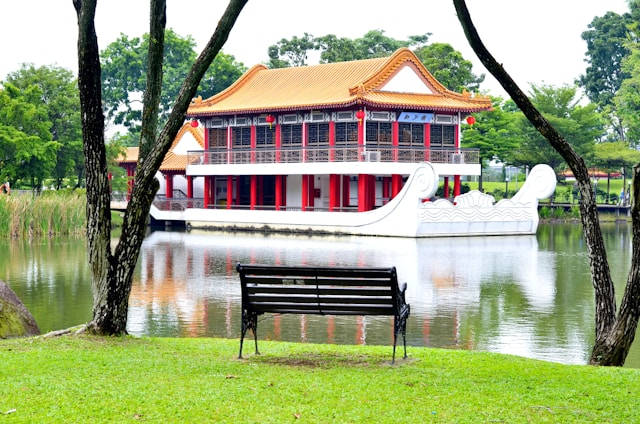

About Chinese Garden
Chinese Garden is a 13.5 hectare park located on an island in Jurong Lake, in the western part of Singapore. Dragon imagery is woven throughout the garden's architecture and stone carvings, appearing on gateways, bridges, and pavilion roofs as guardian symbols believed to ward off evil spirits and bring good fortune. Dragon carvings can also be spotted among the Garden of Abundance's stone sculptures of the 12 Chinese zodiac animals, making dragon-spotting a popular activity for visitors exploring the park.

History
The garden was developed by the Jurong Town Corporation (JTC) as part of a wider plan to bring greenery and a tourist attraction to the Jurong Industrial Estate, giving residents and workers in the predominantly industrial area a recreational space of their own. As part of this plan, the Jurong River was dammed and turned into a lake with several islands, with the Chinese Garden built on one of them; it was the largest Chinese garden outside of China at the time. Construction began in 1971 and was completed in April 1975 at a cost of S$5 million, and the garden drew 21,000 visitors on its opening weekend alone.